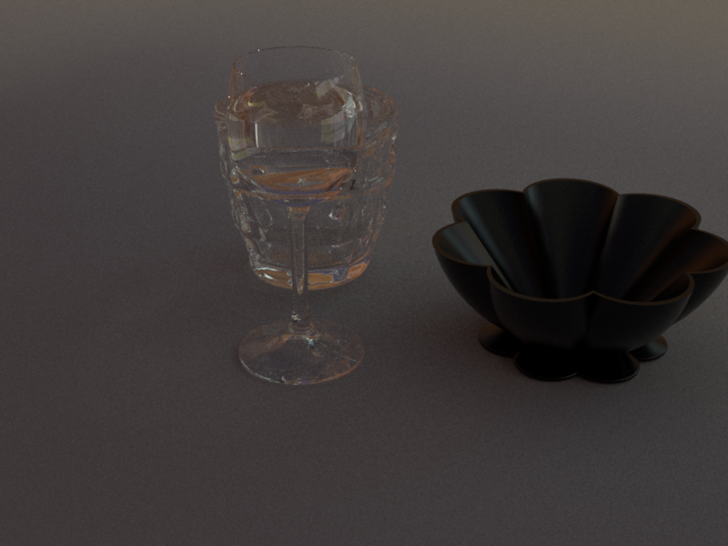

Fabrice Guibert
E-MAIL: fabrice.guibert@epfl.ch
NATIONALITY: FRANCE
Background
I’m a master student in Computer Sciences, studying at EPFL. I have a strong interest in computer graphics and more recently in physically-based rendering and raytracing in general.
I also have some notions of biology and physics, following a minor in biocomputing, and am quite interested in all methods regarding light-organism interactions.
Project Experience
Spring 2018:
Nori raytracer

Project in the context of the Advanced Computer Graphics course. The Nori raytracer is an educational raytracer of which the skeleton was provided. The aim of the project was to furnish said skeleton with additional functionality, to create a ray-tracer that would rely on Monte Carlo sampling of light. The basic framework implemented during the semester comprised warping of random samples, BSDFs of plastic, glass, several integrator schemes and multiple-importance sampling. On top, some additional features were added such as textures, displacement maps and image-based lighting were also implemented. The image-based lighting uses a hierarchical scheme to warp random samples efficiently in the scene.
Super-resolution enhancement
Project in collaboration with Aimee Montero and Arsalan Syed in the context of the Computational photography course.
The purpose of this project was to compare two approaches to deep learning based super resolution, one based on wavelet transforms and the other on the spatial domain, to see if by using wavelets, the network could actually learn more information to perform super resolution, and if so try to explain why. Super-resolution has many applications, in biomedical fields, but also simply to improve resolution of images in and on itself. It interestingly relies on aliasing to recover partial information and obtain better resolution. The architecture used was a ten-layers deep. The interpolation used as raw input for the reconstruction contained a lot of noise; interestingly still, wavelets performed better than spatial nets in all cases, although by a rather small margin.
Spring 2017:
Introduction to Computer Graphics

Project in collaboration with Marc Jolles and Jonathan Scanzi.
The purpose of this project was to construct a 3D scene in realtime, under specific scenery constraints, using OpenGL and C++, ie a rasterizer pipeline. The terrain is procedurally generated (using a variant of Perlin noise), along with special care taken such that said noise is continuous, so as to avoid sudden terrain bumps which would be highly unrealistic. Water was modelled using normal map distortions instead of actual geometry perturbation. Reflection on water is rendered using smart tricks of the framebuffer in the OpenGL pipeline. One can navigate the scene using the keyboard, much like an FPS. The preview uses Bezier curves to move on predetermined paths in a smooth fashion.
God-rays were also added, using an approach suggested in GPU Gems 3, which is basically a ray-tracing approach using far away objects as occluders for the various sources of light in the scene (here specifically, the sun). To speed up computations, only object's contours are considered to create the god-rays, which provide a significant speed-up, as said contours can be downscale, but also discards a lot of potential complexity in the light behaviour. L-systems were also studied, for the purpose of building procedural vegetation.
Spring 2016:
Introduction to visual Computing
Project in collaboration with Marc Jolles and Thomas Garcia.
The goal was to design a game using augmented reality: the user holds a board which can be tilted, so as to move a virtual ball onto the board. The goal is to hit as many objects as possible on the board with the ball to accumulate points!
This project was the occasion to study a simple game-building, study intersections, modelization of simple objects and their bounding boxes from a mathematical perspective, as well as create a simple physical engine, along with some gamification notions, such as scores, visualization and human perception for the purpose of tangible rewards in the context of a game. Basics of real-time image processing, such as Hough transform and filtering were also applied in this project, to detect a real board from a webcam.